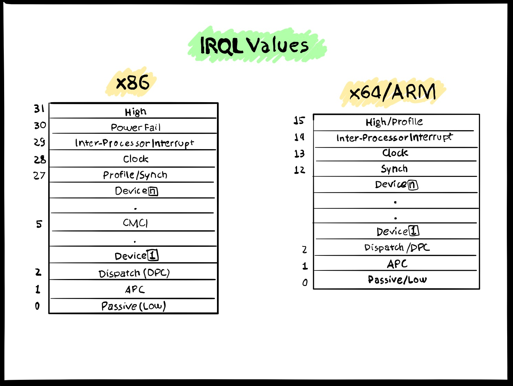
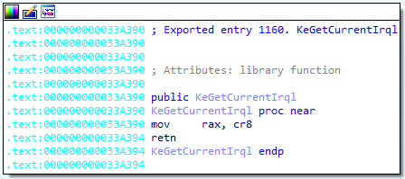
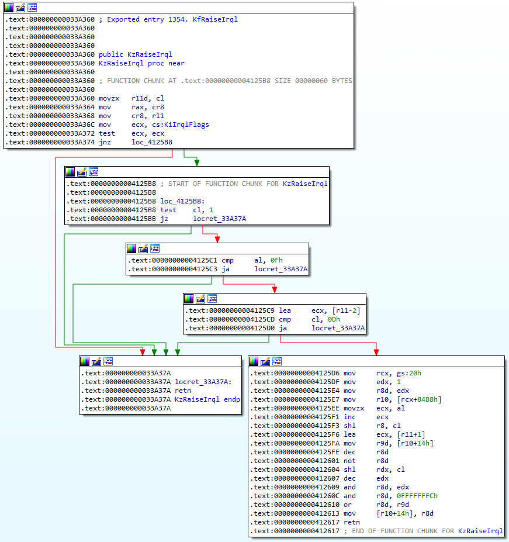

IRQLs Close Encounters of the Rootkit Kind

IRQL Overview
Present since the early stages of Windows NT, an Interrupt Request Level (IRQL) defines the current hardware priority at which a CPU runs at any given time. On a multi-processor architecture, each CPU can hold a different and independent IRQL value, which is stored inside the CR8 register. We should keep this in mind as we are going to build our lab examples on a quad-core system.
Every hardware interrupt is mapped to a specific request level as depicted below.
|  |
|---|
| IRQL Values |
A CPU is interrupted from completing its current task only when it receives an interrupt that is above the current IRQL value. The current running thread is responsible for handling these interrupts, which saves the current CPU state and then processes the Interrupt Service Routine (ISR) mapped to the incoming IRQL. Each interrupt routine is mapped inside the Interrupt Description Table (IDT), whose pointer is stored inside the idtr register. From the debugger, the IDT can be inspected through the !idt command, which automatically resolves pointers symbols and other details.
kd> !idt
Dumping IDT: fffff8015e262000
00: fffff8015b81fb00 nt!KiDivideErrorFault
01: fffff8015b81fe40 nt!KiDebugTrapOrFault Stack = 0xFFFFF8015E2A0000
02: fffff8015b820340 nt!KiNmiInterrupt Stack = 0xFFFFF8015E292000
03: fffff8015b820800 nt!KiBreakpointTrap
04: fffff8015b820b40 nt!KiOverflowTrap
05: fffff8015b820e80 nt!KiBoundFault
06: fffff8015b8213c0 nt!KiInvalidOpcodeFault
07: fffff8015b8218c0 nt!KiNpxNotAvailableFault
08: fffff8015b821bc0 nt!KiDoubleFaultAbort Stack = 0xFFFFF8015E28B000
09: fffff8015b821ec0 nt!KiNpxSegmentOverrunAbort
0a: fffff8015b8221c0 nt!KiInvalidTssFault
...
d1: fffff8015b817f18 nt!HalpTimerClockInterrupt (KINTERRUPT fffff8015c1119a0)
Notice that the interrupt at index d1 is mapped to the CPU clock. We can verify if its IRQL indeed corresponds to the 13th value from the table above. To do so, we dump the CPU clock’s KINTERRUPT structure that we found earlier in the IDT.
kd> dt _KINTERRUPT fffff8015c1119a0 Irql
nt!_KINTERRUPT
+0x05c Irql : 0xd ''
The KINTERRUPT is a crucial structure that stores information related to interrupt dispatching.
Now that we’ve briefly discussed IRQLs, let’s explore their role and duties as kernel synchronization mechanisms.
Synchronization at IRQL ≥ 2
When two or more threads need to access a shared kernel resource, they must agree on how to access the shared object in a synchronous way to eliminate the chances of corrupting it.
A mutex (from Mutual Exclusion) is one way to accomplish such synchronization between threads. When the first thread wants to access a Critical Section1 (the shared portion of code), it acquires a lock on the mutex. Once the thread has completed its tasks, it releases the mutex’s lock and only at that moment can another thread acquire it and access the shared resource. In layman’s terms, a mutex is protecting the critical section from being accessed or modified by multiple threads at the same time.
Since the Windows system scheduler runs at DISPATCH_LEVEL (IRQL 2), mutexes cannot be adopted at a level above or equal to 2. This is due to the fact that any thread-synchronization mechanism requires the scheduler to take scheduling action on those threads and thus, having a thread running at the same IRQL of the scheduler will ultimately prevent the scheduler from even starting.
Now, the pressing question from a rootkit developer’s perspective: why do we even need a synchronization primitive at IRQL ≥ 2 if the scheduler is already taking care of everything at lower priorities?
Rootkits and alike, often access and modify shared kernel resources in order to subvert system properties or just to simply be less conspicuous. The rootkit synchronization technique we are going to analyze in this blog post has its very effectiveness in running at IRQL DISPATCH_LEVEL, thus enabling the rootkit code to modify kernel structures without risking any system crash.
Albeit this technique has been originally presented in the well-known Hoglund/Butler book from 2005, it’s still equally effective on present systems.
The code reference for this project is available on GitHub. It’s an x64 version of Bill Blunden’s Rootkit Arsenal project driver that implements the Hoglund/Butler synchronization mechanism.
Idling CPUs - DPCs to the Rescue
The goal of our rootkit project is to access a shared kernel resource while making sure that no other threads running on any CPU are going to step on our toes. As mentioned earlier, we are not allowed to rely on mutexes to perform our synchronization routine, so we need to resort to another kernel mechanism: Deferred Procedure Calls (DPC).
DPCs are normally used whenever a high hardware interrupt wants to hold up some of its routine to the lower DISPATCH (2) level. In this way, DPCs allow drivers to down-prioritize less critical tasks to a lower IRQL level. Once initialized, DPCs are then enqueued on a per-CPU queue and executed when all the remaining higher IRQLs are finished.
One complementary feature of DPCs is that, after initializing the DPC structure with the KeInitializeDpc routine, we can specify the exact target CPU where the DPC is going to be executed with the KeSetTargetProcessorDpc function. The reason this is critically important will become clear shortly.
Now that we’re armed with a basic understanding of DPCs, let’s determine how they fit in our project. Here’s the overall approach we are going to implement as our custom DISPATCH-LEVEL mutex:
- Increase the current CPU’s IRQL to DISPATCH_LEVEL.
- Initialize and enqueue DPCs so we set other CPUs to DISPATCH_LEVEL and perform an infinite NOP loop.
- The current CPU accesses the shared resource.
- We tell DPCs running on the other CPUs to exit the loop.
- We restore the current CPU’s IRQL
This way, we are able to safely access the shared resource by forcing the remaining CPUs to do nothing and just sit on their metaphorical hands. We’re now going to dissect the relevant code portion for each of these steps, and finally verify our assumptions with the debugger.
Inspecting the Code
From a high-level perspective, we already know what to do, so let’s investigate how. We can start by inspecting the DriverEntry routine.
NTSTATUS DriverEntry(IN PDRIVER_OBJECT pDriverObject, IN PUNICODE_STRING regPath)
{
NTSTATUS ntStatus;
KIRQL irql;
PKDPC dpcPtr;
DBG_TRACE("Driver Entry", "Establishing other DriverObject function pointers");
(*pDriverObject).DriverUnload = Unload;
DBG_TRACE("Driver Entry", "Raising IRQL");
irql = RaiseIRQL();
DBG_TRACE("Driver Entry", "Acquiring Lock");
dpcPtr = AcquireLock();
AccessResource();
DBG_TRACE("Driver Entry", "Releasing Lock");
ReleaseLock(dpcPtr);
DBG_TRACE("Driver Entry", "Lowering IRQL");
LowerIRQL(irql);
return (STATUS_SUCCESS);
}
In the first step of our routine, we increase the current process IRQL through the RaiseIRQL function.
KIRQL RaiseIRQL()
{
KIRQL curr;
KIRQL prev;
/* Get the current interrupt irql level */
curr = KeGetCurrentIrql();
prev = curr;
if (curr < DISPATCH_LEVEL)
{
KeRaiseIrql(DISPATCH_LEVEL, &prev);
}
return (prev);
}
We first retrieve the current CPU’s IRQL level through the KeGetCurrentIrql function and, interestingly enough, this ntoskrnl routine comprises only two instructions.
|  |
|---|
| Inspecting KeGetCurrentIrql |
This proves what we just learned earlier–that the current CPU IRQL value is stored in the cr8 register and is then placed in RAX as a return value.
As a next step, RaiseIRQL checks if the current IRQL value is lower than DISPATCH_LEVEL and if so, it raises it to that IRQL through the _KeRaiseIrql_function. Inside ntoskrnl, this function is mapped as KfRaiseIrql and performs the following:
|  |
|---|
| Inspecting KfRaiseIrql |
The top-most block provides the main functionality. In the first three instructions, the desired IRQL level is saved in r11. The current IRQL is then placed in rax as a return value and finally, the requested IRQL is placed in cr8. The other three blocks are just checking that the requested IRQL is not 1 (APC), and that the current IRQL and requested ones are not above 0xF (max allowed value).
If all these conditions are false, on the bottom right block, the undocumented SchedulerAssist value from the KPRCB is modified accordingly.
Having raised the current CPU’s IRQL, it is now time to perform the same operation for the other remaining CPUs. This is accomplished with the help of the AcquireLock function and through the use of DPCs. Let’s analyze this routine by decoupling it by functionality.
PKDPC AcquireLock()
{
...
InterlockedAnd(&LockAcquired, 0);
InterlockedAnd(&nCPUsLocked, 0);
DBG_PRINT2("[AcquiredLock]: nCPUs=%u\n", KeNumberProcessors);
dpcArray = (PKDPC)ExAllocatePoolWithTag(NonPagedPool,KeNumberProcessors * sizeof(KDPC), 0x0F11);
if (dpcArray == NULL) { return(NULL); }
cpuID = KeGetCurrentProcessorNumber();
for (i = 0; i < KeNumberProcessors; i++)
{
PKDPC dpcPtr = &(dpcArray[i]);
if (i != cpuID)
{
KeInitializeDpc(dpcPtr, lockRoutine, NULL);
KeSetTargetProcessorDpc(dpcPtr, i);
KeInsertQueueDpc(dpcPtr, NULL, NULL);
}
}
nOtherCPUs = KeNumberProcessors - 1;
InterlockedCompareExchange64(&nCPUsLocked, nOtherCPUs, nOtherCPUs);
while (nCPUsLocked != nOtherCPUs)
{
NOP_FUNC();
InterlockedCompareExchange64(&nCPUsLocked, nOtherCPUs, nOtherCPUs);
}
return (dpcArray);
}
Before dealing with anything related to DPCs, we first need some sort of synchronization mechanism that tells us that all the CPU are running at DISPATCH_LEVEL along with a method to signal the other CPUs when to exit the infinite NOP loop.
According to MSDN, the Interlocked function family provides exactly what we want:
These functions are generated as intrinsics by the compiler, so that the CPU can force memory barriers to guarantee mutual exclusion and order of operation between threads.
To this end, we are going to use LockAcquired as a boolean-like variable to notify lockRoutine when to exit the loop. We’ll also use nCPUsLocked as a counter variable to atomically increment it on every CPU, via the InterlockedIncrement64(&nCPUsLocked) statement.
As a next step, we can now take care of DPCs creation. We first need to allocate a kernel pool via ExAllocatePoolWithTag of the size of a KDPC multiplied by the number of the running CPUs.
We then run a for-loop where we initialize on every other CPU the DPC via the KeInitializeDpc function, providing the respective KDPC and the lockRoutine as a function to be executed by the scheduled DPC. Next, we tell which CPU has to run the DPC with a call to KeSetTargetProcessorDpc and we finally enqueue it with KeInsertQueueDpc.
Once the DPC is running on the given CPU, it will execute the lockRoutine function that we have passed as an argument during DPC initialization, which has the following structure.
void lockRoutine
...
{
// Atomically increase the value of nCPUsLocked, which means that another CPU enters the nop cycle */
InterlockedIncrement64(&nCPUsLocked);
// spin NOP until LockAcquired flag is set ( i.e., by ReleaseLockO))
while (InterlockedCompareExchange64(&LockAcquired, 1, 1) == 0)
{
NOP_FUNC();
}
// Exit the NOP loop
InterlockedDecrement64(&nCPUsLocked);
return;
}
The lockRoutine function
First, InterlockedIncrement64 is called, so that the nCPUsLocked variable that was previously set to zero is now incremented to one. Since this routine will be executed by every other CPU, the variable will be incremented by each one and ultimately reach the “total CPU-1” value, which will force the while-loop in the AcquireLock function to exit.
As a next step, lockRoutine employs the InterlockedCompareExchange64 function to check if the value of LockAcquired is set to “0” or “1”. If it’s 0, it will enter a while-loop and execute the standby NOP_FUNC routine, defined in the project’s lib.asm resource.
The purpose of this routine is to run on each other CPU that has been already raised at DISPATCH_LEVEL so that will prevent the execution of any thread that might undermine our operations.
Having all the other CPUs but ours stuck on an infinite loop allows us to safely access the shared resource with the current IRQL value of DISPATCH_LEVEL.
Normally, the shared resource that a rootkit wants to modify would be some kind of kernel table or structure like the EPROCESS ActiveProcessLinks. For the sake of this blog post, we are just going to demonstrate it with the following routine.
void AccessResource()
{
int i = 0;
int max = 1 * 1000000000;
DBG_TRACE("Accessing Shared Resource");
for (i = 0; i < max ; i++)
{
SHARED_FUNC();
}
return;
}
AccessResource will in turn execute the following purposely pointless SHARED_FUNC routine one million times.
SHARED_FUNC PROC
xchg rax, rbx
xchg rbx, rax
ret
SHARED_FUNC ENDP
END
Running the above instructions in this very large for-loop will effectively render the system unusable for a few seconds thus, as a moral of the story, the rootkit should be swift when accessing a shared resource in the kernel.
Debugging the Rootkit
In the debugger, we can now verify what we took for granted in the above code listings. If we place a breakpoint at the AcquireLock routine, we can inspect the KDPC as it gets initialized by KeInitializeDpc.
Breakpoint 1 hit
IRQL!AcquireLock:
fffff806`1d6a1080 4883ec58 sub rsp,58h
...
2: kd> pct
IRQL!AcquireLock+0x127:
fffff806`1d6a11a7 ff156b0e0000 call qword ptr [IRQL!_imp_KeInitializeDpc (fffff806`1d6a2018)]
2: kd> u fffff8061d6a1470
The first parameter passed to the function is the empty KDPC structure.
1: kd> dt _KDPC ffffb289db9035b0
nt!_KDPC
+0x000 TargetInfoAsUlong : 0
+0x000 Type : 0 ''
+0x001 Importance : 0 ''
+0x002 Number : 0
+0x008 DpcListEntry : _SINGLE_LIST_ENTRY
+0x010 ProcessorHistory : 0
+0x018 DeferredRoutine : (null)
+0x020 DeferredContext : (null)
+0x028 SystemArgument1 : (null)
+0x030 SystemArgument2 : (null)
+0x038 DpcData : (null)
The structure gets populated once the function returns,
1: kd> t
nt!KeInitializeDpc:
fffff806`160e3ac0 33c0 xor eax,eax
1: kd> pt
nt!KeInitializeDpc+0x18:
fffff806`160e3ad8 c3 ret
1: kd> dt _KDPC ffffb289db9035b0
nt!_KDPC
+0x000 TargetInfoAsUlong : 0x113
+0x000 Type : 0x13 ''
+0x001 Importance : 0x1 ''
+0x002 Number : 0
+0x008 DpcListEntry : _SINGLE_LIST_ENTRY
+0x010 ProcessorHistory : 0
+0x018 DeferredRoutine : 0xfffff806`1d6b1470 void IRQL!lockRoutine+0
+0x020 DeferredContext : (null)
+0x028 SystemArgument1 : (null)
+0x030 SystemArgument2 : (null)
+0x038 DpcData : (null)
The DeferredRoutine is our defined DPC routine, while the Number value refers to the target CPU where it is going to be executed, which gets populated once KeSetTargetProcessorDpc returns.
1: kd> dt _KDPC ffffb289db9038b0
nt!_KDPC
+0x000 TargetInfoAsUlong : 0x5030113
+0x000 Type : 0x13 ''
+0x001 Importance : 0x1 ''
+0x002 Number : 0x503
+0x008 DpcListEntry : _SINGLE_LIST_ENTRY
+0x010 ProcessorHistory : 0
+0x018 DeferredRoutine : 0xfffff806`1d6d1470 void IRQL!lockRoutine+0
+0x020 DeferredContext : (null)
+0x028 SystemArgument1 : (null)
+0x030 SystemArgument2 : (null)
+0x038 DpcData : (null)
The resulting value is the result of the constant 0x500 plus the CPU index.
We can also verify the enqueued DPCs through the !dpcs command.
2: kd> !dpcs
CPU Type KDPC Function
0: Normal : 0xffffb289db903b50 0xfffff8061d701470 IRQL!lockRoutine
1: Normal : 0xffffb289db903b90 0xfffff8061d701470 IRQL!lockRoutine
Nice, then we can now enable a breakpoint on IRQL!NOP_FUNC and continue execution.
2: kd> g
Breakpoint 7 hit
IRQL!NOP_FUNC:
fffff806`1d691000 90 nop
1: kd> g
Breakpoint 7 hit
IRQL!NOP_FUNC:
fffff806`1d691000 90 nop
3: kd> t
Breakpoint 7 hit
IRQL!NOP_FUNC:
fffff806`1d691000 90 nop
And we have proven that the NOP function is running on every other CPU, as intended.
As a final check, we can now verify that all the other CPUs are executing the NOP routine while we are accessing the share resource. Let’s break on IRQL!AccessResource and verify the IRQL level for all the CPUs.
Breakpoint 6 hit
IRQL!AccessResource:
fffff806`1d691020 4883ec38 sub rsp,38h
0: kd> t
IRQL!AccessResource+0x4:
fffff806`1d691024 c744242000000000 mov dword ptr [rsp+20h],0
0: kd> !irql 0
Debugger saved IRQL for processor 0x0 -- 2 (DISPATCH_LEVEL)
0: kd> !irql 1
Debugger saved IRQL for processor 0x1 -- 2 (DISPATCH_LEVEL)
0: kd> !irql 2
Debugger saved IRQL for processor 0x2 -- 2 (DISPATCH_LEVEL)
0: kd> !irql 3
Debugger saved IRQL for processor 0x3 -- 2 (DISPATCH_LEVEL)